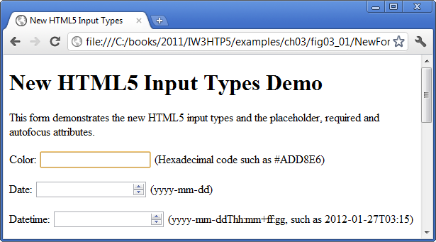

El tipo de input color (Fig. 3.1; líneas 20–21)
permite al usuario introducir un color. Opera muestra un
control selector de color que presenta el color
predeterminado (negro) con una flecha hacia abajo que, al
hacer clic en ella, despliega una lista con 20 colores
básicos (Fig. 3.2). El usuario puede seleccionar un color o
hacer clic en el botón Otro... para elegir entre colores
básicos adicionales o crear un color personalizado.
Al momento de escribir esto, la mayoría de los navegadores
representan el tipo de input color como un campo de texto en
el que el usuario puede escribir un código hexadecimal.
Fig. 3.2
Introducir un color en Opera con un control selector de color.
El atributo autofocus
El atributo autofocus (Fig. 3.1; línea 20)—un
atributo opcional que puede usarse en un solo elemento input
de un formulario—le da automáticamente el foco a ese
elemento input, lo que permite al usuario empezar a escribir
en él de inmediato. La figura 3.3 muestra autofocus en el
elemento color—el primer elemento input de nuestro
formulario—tal como lo representa Chrome. No es
necesario incluir autofocus en tus formularios.

Fig. 3.3
Autofocus en el elemento input color usando Chrome.
Validación
Tradicionalmente ha sido difícil validar la entrada del
usuario, por ejemplo asegurar que una dirección de correo
electrónico, una URL, una fecha o una hora se escriban en el
formato correcto. Los nuevos tipos de input de HTML5 se
autovalidan del lado del cliente, lo que elimina la
necesidad de agregar código JavaScript complicado a tus
páginas web para validar la entrada del usuario, reduce la
cantidad de datos inválidos enviados y, en consecuencia,
disminuye el tráfico de Internet entre el servidor y el
cliente para corregir entradas inválidas.
Cuando un usuario introduce datos en un formulario y lo
envía (en este ejemplo, al hacer clic en el botón Enviar),
el navegador revisa de inmediato los elementos
autovalidables para asegurarse de que los datos sean
correctos. Por ejemplo, si un usuario escribe un valor
hexadecimal de color incorrecto en un navegador que
representa los elementos color como campo de texto (por
ejemplo, Chrome), aparecerá un globo que señala al elemento
e indica que se introdujo un valor inválido (Fig. 3.4). La
figura 3.5 enumera cada uno de los nuevos tipos de input de
HTML5 y proporciona ejemplos de los formatos correctos que
se requieren para que cada tipo de dato sea válido.
Fig. 3.4
Validación de una entrada de color en Chrome.